Appendix B — Introduction to bifurcations
B.1 Background
As we have seen, dynamical system often depend on parameters. For instance, the spruce budworm model \[ u' = \rho\Bigl( 1 - \frac{u}{q} \Bigr) - \frac{u^2}{1+u^2}, \]
depends on two parameters, \(\rho>0\) and \(q>0\). The number of equilibria and their stability will depend on the parameters. However, most of the time a change of a parameter has little effect on the phase portrait: equilibria barely move, their stability is unchanged. In this case we say that the system is topologically stable. Otherwise, like for \(\rho=\rho_1\) or \(\rho = \rho_2\), we have a bifurcation.
Another example we have seen is the Gause-type prey-predator model: \[ \left\{\begin{aligned} u' &= \rho u(1-u) - \frac{\alpha\delta u v}{1+\delta u}, \\ v' &= - v + \frac{\alpha\delta u v}{1+\delta u}, \end{aligned}\right. \]
where we have 3 parameters. For \(\delta = \frac{1}{\alpha-1}\) or \(\delta = \frac{\alpha+1}{\alpha-1}\) we also have bifurcations.
In general, a parametric dynamical system is an equation of the form \[ \mathbf{y}' = \mathbf{f}(\mathbf{y},\mathbf{p}), \]
where \(\mathbf{p}\in\mathbb{R}^m\) is the set of parameters. For the spruce budworm equation, \(\mathbf{p} = (\rho,q)\). Here, we are only focusing on the case \(m = 1\), when \(\mathbf{p}\) is a scalar. Bifurcations occuring in this case are of co-dimension 1.
B.2 Structural stability
Consider the one-parameter ODE \[ \mathbf{y}' = \mathbf{f}(\mathbf{y},p), \]
and suppose that the problem is well-posed for \(p\in\mathcal{P}\subseteq\mathbb{R}\) and \(\mathbf{f}\).
Given \(p=\bar{p}\), the system will have some phase portrait. Is it stable to small perturbations of the parameter \(p\)? In other words, if we consider a new system: \[ \tilde{\mathbf{y}}' = \mathbf{f}(\tilde{\mathbf{y}},p), \]
with \(p \in (\bar{p}-\varepsilon, \bar{p}+\varepsilon)\), \(\varepsilon\ll 1\), is the “error” between \(\tilde{\mathbf{y}}(t)\) and \(\mathbf{y}(t)\) going to zero as \(\varepsilon\to 0\) for any choice of the initial condition? That is, is the phase portrait of the perturbed system “converging” to the phase portrait of the original ODE? This is typically the case.
Theorem B.1 (stability to perturbations) Suppose that \(\mathbf{f}(\mathbf{y},p)\) is continuous and locally Lipschitz in \(\mathbf{y}\), uniformly in \(p\), and that the ODE is well-posed for any choice of \(p\) in the interval. Then the solution of the ODE \(\boldsymbol{\phi}(t,\mathbf{y}_0,p)\to\boldsymbol{\phi}(t,\mathbf{y}_0,\bar{p})\) uniformly as \(p\to \bar{p}\).
This theorem gives a zero-stability result, in the limit \(p\to \bar{p}\). How about the case of \(p\in(\bar{p}-\varepsilon, \bar{p}+\varepsilon)\) but \(\varepsilon > 0\)? Is the perturbed ODE still “close” to the original one? We have the following definition
Definition B.1 (structural stability) The original ODE is structurally stable in some (closed) region of the phase space if and only if there exists \(\varepsilon > 0\) such that the perturbed system is topologically equivalent to the original ODE for all \(p\in (\bar{p}-\varepsilon, \bar{p}+\varepsilon)\).
Definition B.2 (topological equivalence) Two ODEs are topologically equivalent if there exists a diffeomorphism that smoothly maps the phase portrait of one system into the other, preserving the direction of time.
For instance, the two phase portraits below are topologically equivalent, because we can smoothly deform one into the other. (Put a fork at the center, then twist like you would do with spaghetti.)
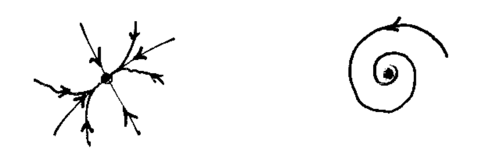
B.3 Bifurcations
On the other hand, these below are not topologically equivalent, because if we shrink the limit cycle down to a point, we collide with another equilibrium at the center, making the map non-invertible.
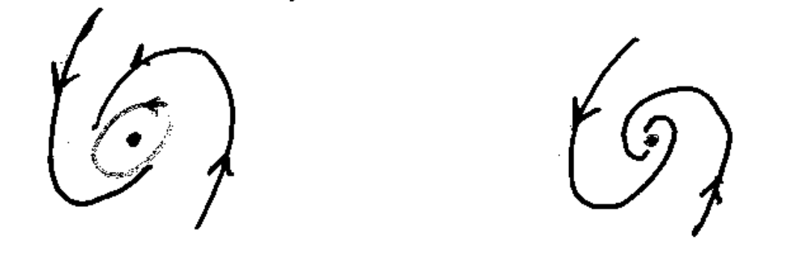
When we are a situation like the one above, we have a bifurcation.
Definition B.3 (bifurcation) If for some value \(p=\bar{p}\) a system is not structurally stable, then for \(p=\bar{p}\) we have a bifurcation.
Bifurcations result from the collision of invariant sets of the dynamical system, for instance 2 equilibria or 2 limit cycles colliding one into the other, for some value of the parameter. We can visualize this in a bifurcation plot, like the one below:
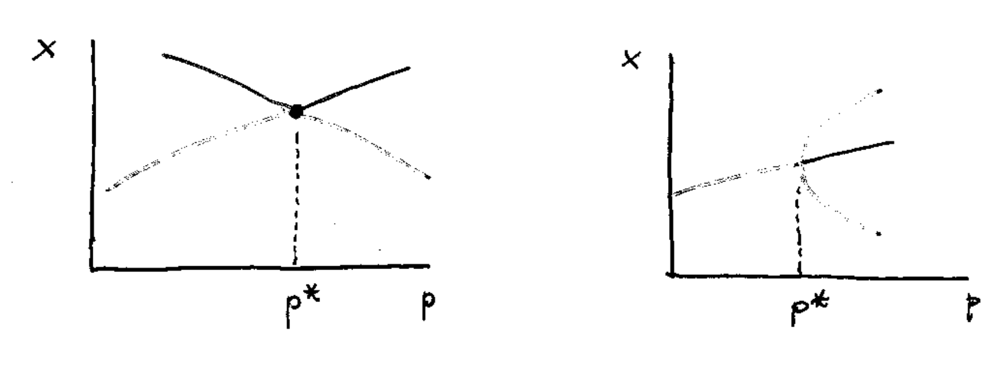
where we have on the abscissa the parameter, and on the ordinate the phase space. The curves are equilibria, and for \(\bar{p}\) we have a bifurcation.
The bifurcation plot is just a “stack” of phase portraits for various values of \(p\). In some sense, a smooth transition between one layer to the other implies topological equivalence, otherwise we have bifurcations. For instance, for planar system we could have:
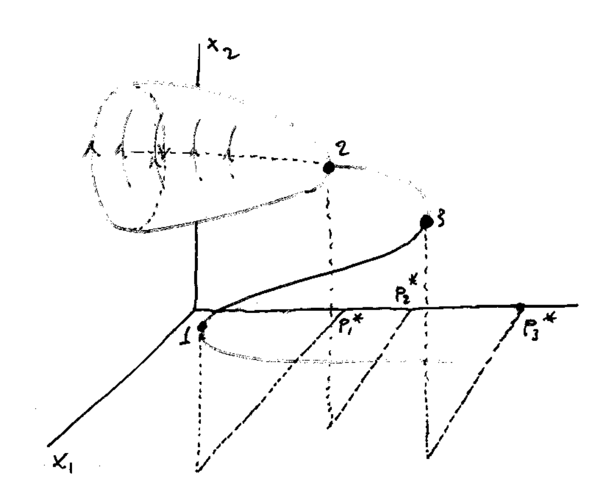
The “cone” is formed by limit cycles. Here, we have 3 bifurcations.
B.4 Continuation of equilibria
Consider the dynamical system in 1D: \[ y' = f(y,p), \]
with \(p\in\mathbb{R}\). An equilibrium \(\bar{y}\) of the ODE for a given parameter \(\bar{p}\) is a solution to the equation: \[ 0 = f(\bar{y},\bar{p}). \]
Suppose that \(f\) is a smooth function in \((y,p)\). Thanks to the implicit function theorem, if \(\partial_p f(\bar{y}, \bar{p})\neq 0\) we can locally define a represent the curve \(f(\bar{y}, \bar{p})=0\) in the space \((y,p)\in\mathbb{R}^2\) with a function \(y=\phi(p)\) such that \(f(\phi(p),p)=0\) for \(p\in \mathcal{B}_\varepsilon(\bar{p})\), some neighborhood of \(\bar{p}\).
The curve \((\phi(p),p)\) represents the continuation of the equilibrium \(\bar{y}\) as we change the parameter \(p=\bar{p}\). All points along \((\phi(p),p)\) are equilibria, by construction, for different values of the parameter \(p\).
We can extend the same construction in several dimensions, say \(\mathbf{y}\in\mathbb{R}^n\) and \(p\in\mathbb{R}\). Let us by \(\mathbf{f}_\mathbf{y}(\mathbf{y},p)\) the Jacobian of \(\mathbf{f}\) with respect to \(\mathbf{y}\). Suppose that \(\bar{\mathbf{y}}\) is an equilibrium for the ODE \[ \mathbf{y}' = \mathbf{f}(\mathbf{y},\bar{p}), \]
that is, \(\mathbf{f}(\bar{\mathbf{y}},\bar{p})=\mathbf{0}\), and that \[ \det \mathbf{f}_\mathbf{y}(\bar{\mathbf{y}},\bar{p}) \neq 0, \]
then there exists a function \(\mathbf{y}=\boldsymbol{\phi}(p)\) such that \(\mathbf{f}(\boldsymbol{\phi}(p),p)=\mathbf{0}\) for \(p\in\mathcal{B}_\varepsilon(\bar{p})\).
The stability of the equilibria along the curve is also preserved: the eigenvalues of \(\mathbf{f}_\mathbf{y}(\mathbf{y},p)\) depends continuously on \(p\) so the branch of equilibria \(\mathbf{y}=\boldsymbol{\phi}(p)\) will inherit the same stability properties of \(\bar{\mathbf{y}}\).
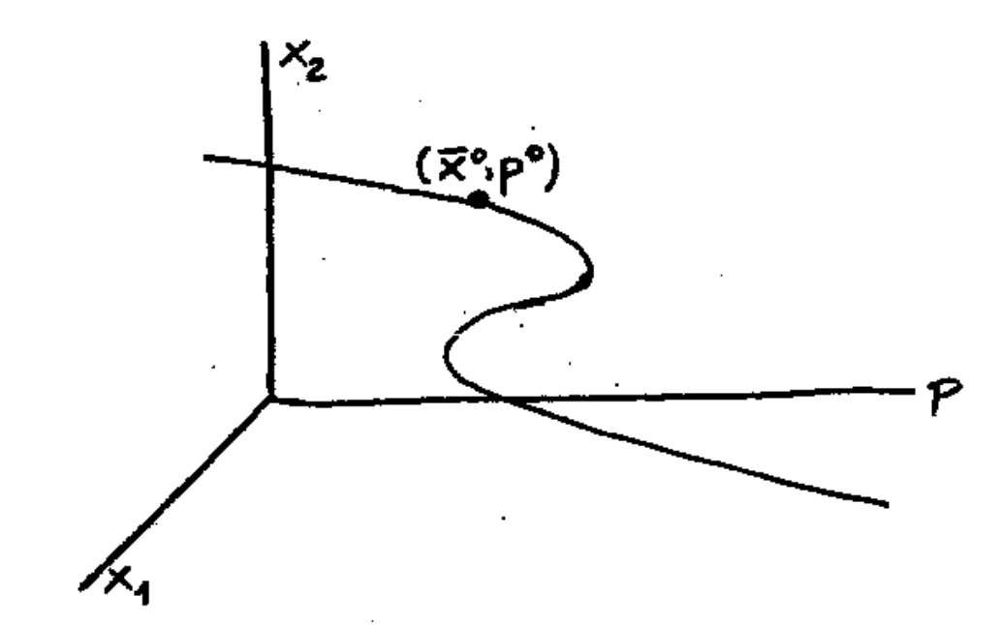
What if an eigenvalue of \(\mathbf{f}_\mathbf{y}(\boldsymbol{\phi}(p),p)\) will end up with zero real part along the curve?
Then we have a bifurcation. We still denote this point with \(\bar{p}\) and the corresponding equilibrium with \(\bar{\mathbf{y}}\). We have different options:
Tangent bifurcation. \(\mathbf{f}_\mathbf{y}(\bar{\mathbf{y}},\bar{p})\) as eigenvalue 0 and \(\mathbf{f}_p(\bar{\mathbf{y}},\bar{p}) \neq 0\).
Transcritical bifurcation. \(\mathbf{f}_\mathbf{y}(\bar{\mathbf{y}},\bar{p})\) as eigenvalue 0 and \(\mathbf{f}_p(\bar{\mathbf{y}},\bar{p}) = 0\).
Hopf bifurcation. \(\mathbf{f}_\mathbf{y}(\bar{\mathbf{y}},\bar{p})\) as eigenvalue \(\pm i\omega\) (only \(n\ge 2\)).
Note that if one real eigenvalue is zero, then we cannot apply the implicit function theorem, and the curve \(\boldsymbol{\phi}\) cannot be defined at \(p=\bar{p}\) (this is the case of the first 2 bifurcations.)
B.5 Tangent bifurcation
The simplest bifurcation is perhaps the tangent bifurcation. Consider the following ODE: \[ y' = f(y,p) = p - y^2, \]
for \(p\in\mathbb{R}\). We have the following situation:
- If \(p>0\) there are 2 equilibria, \(\bar{y}^{\pm} = \pm\sqrt{p}\). Since \(\partial_y f = -2y\), we have that \(\bar{y}^-\) is unstable and \(\bar{y}^+\) is asympotically stable.
- If \(p<0\) there is no real equilibrium.
- If \(p=\bar{p}=0\) we have a single equilibrium \(\bar{y}=0\). The stability cannot be deduced from the linearization (why?), but from the sign of \(f\) we see that \(\bar{y}\) is attractive for \(y>0\) and repulsive for \(y<0\). It is called saddle-node.
Since \(\partial_y f(\bar{y},\bar{p})=0\) but \(\partial_p f(\bar{y},\bar{p}) = 1 \neq 0\), for \(p=\bar{p}=0\) we have a tangent bifurcation. Tangent bifurcations are also called limit points (in MatCont denoted by LP). The reason for the name should be clear from the bifurcation plot.
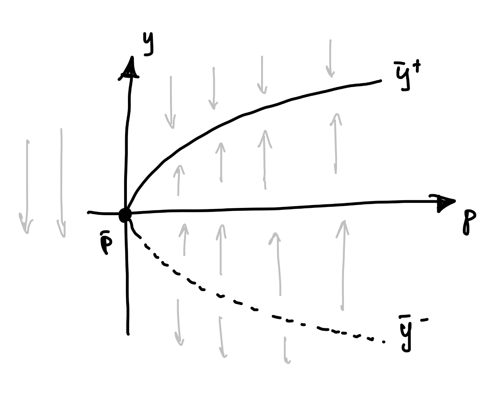
Tangent bifurcations are catastrophic, in the sense that a point at equilibrium right before the bifurcation will diverge from its state after the bifurcation (imagine to move a point along the stable branch from right to left.) Note that the curve is smooth, because \(\partial_p f(\bar{y},\bar{p})\neq 0\). Check the next figure, where we visualize \(f(y,p)\) around the bifurcation (in black the zero levelset, that is the curve of equilibria):
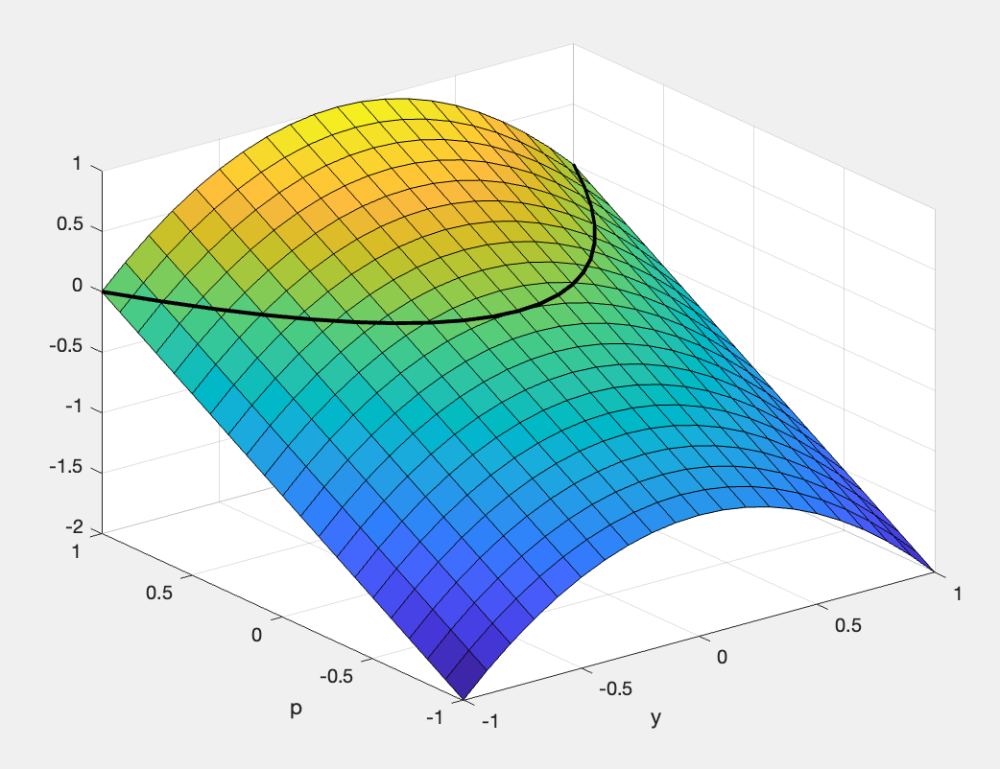
B.6 Transcritical bifurcation
The transcritical bifurcation occurs when an equilibrium has 0 real part and also \(\partial_p f(\bar{y},\bar{p})=0\). The normal form is: \[ y' = py - y^2. \]
The derivative of \(f\) is \(f_y(y,p) = p-2y\). We have 2 equilibria,
- \(y_0=0\), stable for \(p>0\) and unstable for \(p<0\).
- \(\bar{y}=p\), unstable for \(p>0\) and stable for \(p<0\).
For \(p=0\) we only have one equilibrium \(\bar{y}=0\), which is a saddle-node because it is attractive for \(y<0\) and repulsive for \(y>0\).
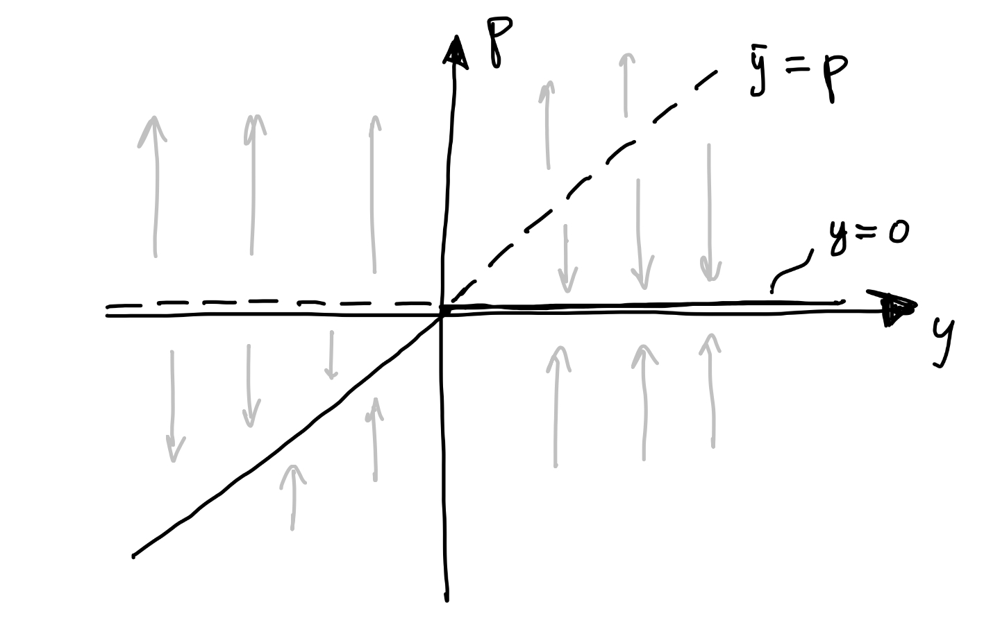
Transcritical bifurcations are very common in biological modeling, because some equilibria (like the origin) do not depend on the parameters and are always present. Therefore, in the bifurcation plot their curve do not change, and can be intersected by other curves of equilibria. In fact, if \(f(0,p)=0\) for all \(p\), then also \(f_p(0,p)=0\). Note that the above model is the logistic equation.
From the 3d visualization of \(f\):
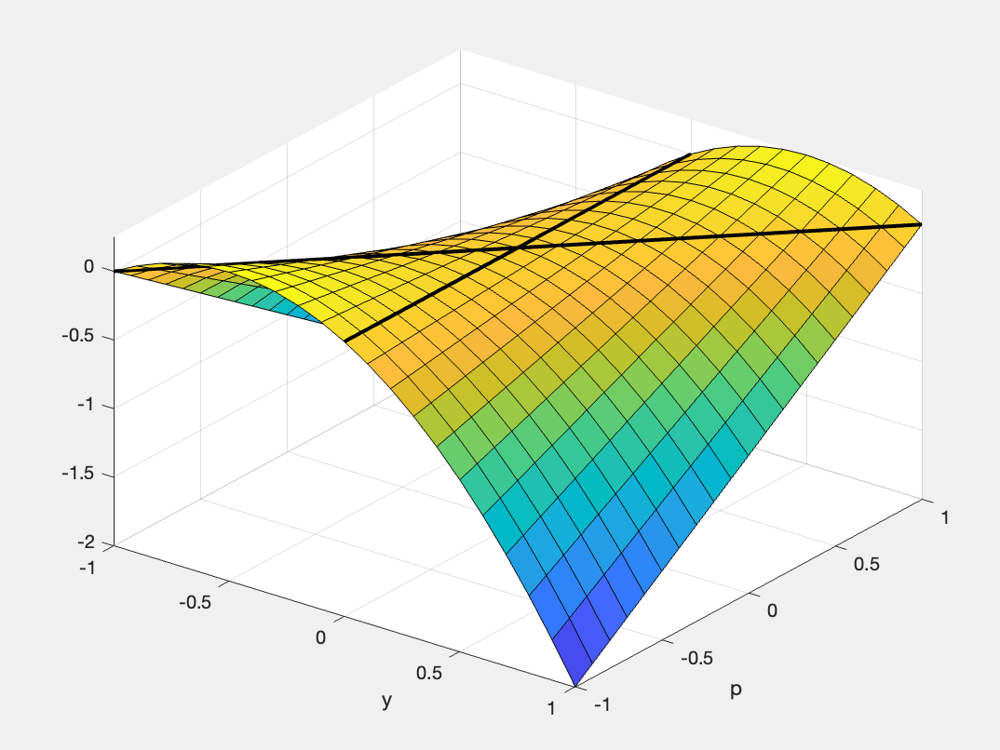
we see a critical point at the bifurcation point. The eigenvectors give the tangents to the 2 curves of equilibria. In this way, it is possible to switch curve at the bifurcation point.
B.7 Hopf bifurcation
The Hopf bifurcation occurs when an equilibrium changes stability and a limit cycle appears. The normal form is: \[ \left\{ \begin{aligned} x' &= \sigma x + \omega y + c x (x^2 + y^2), \\ y' &= \sigma y - \omega x + c y (x^2 + y^2), \\ \end{aligned} \right. \]
Suppose that \(\sigma\), \(\mu\), and \(c\) depend on some parameter \(p\in\mathbb{R}\).
We have that \((x,y)=(0,0)\) is an equilibrium for all choices of \(p\). The Jacobian at \((0,0)\) has eigenvalues \[ \lambda^\pm = \sigma \pm i \omega, \]
When \(\sigma(p) = 0\), the real part of the complex conjugate eigenvalues becomes zero: we have a Hopf bifurcation. To check the existence of a limit cycle, we consider the system in polar coordinates: \[ \left\{ \begin{aligned} x &= r \cos\theta, \\ y &= r \sin\theta, \end{aligned} \right. \quad\Rightarrow\quad \left\{ \begin{aligned} r &= \sqrt{x^2 + y^2}, \\ \theta &= \arctan (y/x). \end{aligned} \right. \]
To change the variables, simply note that: \[ \begin{split} r\mathrm{d}r &= \tfrac{1}{2}\mathrm{d}(r^2) = x\mathrm{d}x + y\mathrm{d}y \\ &= \bigl(\sigma (x^2 + y^2) + c (x^2 + y^2)(x^2 + y^2) \bigr)\mathrm{d}t = \\ &= \bigl(\sigma r^2 + c r^4 \bigr)\mathrm{d}t, \end{split} \]
and \[ \begin{split} \mathrm{d}\theta &= \frac{\mathrm{d}y/x - y\mathrm{d}x/x^2}{1 + (y/x)^2} = \frac{x\mathrm{d}y - y\mathrm{d}x}{x^2 + y^2} \\ &= \frac{x(\sigma y - \omega x + cy(x^2+y^2)) - y(\sigma x + \omega y + cx(x^2+y^2))}{x^2 + y^2}\mathrm{d}t \\ &= -\frac{\omega (x^2 + y^2)}{x^2 + y^2}\mathrm{d}t = -\omega\mathrm{d}t. \end{split} \]
The system in polar coordinates is: \[ \left\{ \begin{aligned} r' &= \sigma r + c r^3, \\ \theta' &= -\omega. \\ \end{aligned} \right. \]
Assuming \(\omega(p)\neq 0\), we have two equilibria:
\(r=0\), which corresponds to the origin and we know it is stable for \(\sigma(p)<0\) and unstable for \(\sigma(p)>0\).
\(r=\bar{r}=\sqrt{-\sigma/c}\), which exists only for \(c(p)\neq 0\) and \(\sigma(p)c(p)<0\). When there exists, it is stable if \(\sigma(p)>0\) and unstable if \(\sigma(p)<0\). This corresponds to a limit cycle of radius \(\bar{r}\).
In conclusion, we have 2 types of Hopf bifurcations.
- Supercritical Hopf bifurcation \(H^S\): \(\sigma'(\bar{p})>0\) and \(c(\bar{p})<0\). The stable equilibrium at the origin becomes unstable and a stable limit cycle is born. The bifurcation is not catastrophical.
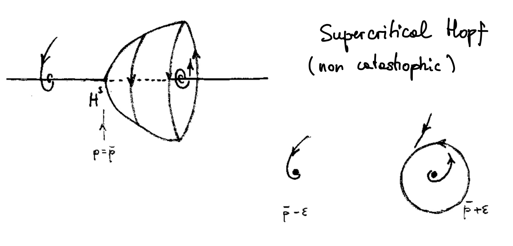
- Subrcritical Hopf bifurcation \(H_S\): \(\sigma'(\bar{p})<0\) and \(c(\bar{p})>0\). The unstable equilibrium at the origin becomes stable and an unstable limit cycle is born. The bifurcation is catastrophical.
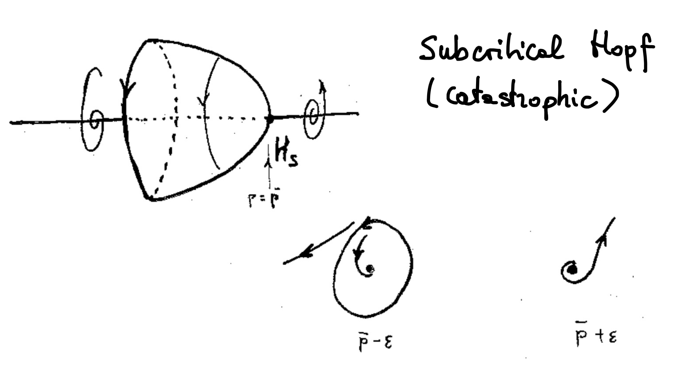
Note that for \(c=0\) at the bifurcation point we have an infinite number of limit cycles (non-isolated periodic orbit), like the classical oscillator. This is a degenerate Hopf bifurcation so the condition \(c(\bar{p})\neq 0\) is called non-degeneracy condition. The condition \(\sigma'(\bar{p})\neq 0\) is called trasversality condition.
For a general system of ODEs: \[ \left\{ \begin{aligned} x' &= f(x,y,p), \\ y' &= g(x,y,p), \\ \end{aligned} \right. \]
such that \((\bar{x},\bar{y})=(0,0)\) is an equilibrium (with no loss of generality we can take the equilibrium at the origin), thanks to linearization we can always write the system around the equilibrium in the form: \[ \left\{ \begin{aligned} x' &= \sigma(p) x + \omega(p) y + \tilde{f}(x,y,p), \\ y' &= \sigma(p) y - \omega(p) x + \tilde{g}(x,y,p), \\ \end{aligned} \right. \]
with \(\tilde{f}(0,0,p)=\tilde{g}(0,0,p)=0\). It is possible to further expand \(\tilde{f}\) and \(\tilde{g}\) so to find a term of the form \(cr^3\) as above. The coefficient \(c\) is called first Lyapunov exponent and it reads: \[ \begin{split} 16 c &= f_{xxx} + f_{xyy} + g_{xxy} + g_{yyy} \\ &+ \frac{1}{\omega} \Bigl( f_{xy}(f_{xx}+f_{yy}) - g_{xy}(g_{xx}+g_{yy}) - f_{xx}g_{xx} - f_{yy}g_{yy} \Bigr). \end{split} \]
Then we have the following:
Theorem B.2 (Hopf) Suppose that \(\sigma'(p)\neq 0\) (trasversality) and \(c\neq 0\) (non-degeneracy). Then there exists a branch \(\Gamma_p\) of periodic solutions with period \(T(p)\) for \(p\) such that \(|p-\bar{p}|\) is small and \(p > \bar{p}\) if \(\sigma'(\bar{p})c < 0\) (resp. \(p < \bar{p}\) if \(\sigma'(\bar{p})c > 0\)). Furthermore, \(\Gamma_p \to \bar{y}\) for \(p\to\bar{p}\) and \(T(p)\to \frac{2\pi}{\omega(\bar{p})}\). If \(c<0\) \(\Gamma_p\) are attracting; if \(c>0\) \(\Gamma_p\) are repelling.
We observed the Hopf bifurcation in Gause-type prey-predator models and in negative feedback networks.
B.8 Limit cycle tangent bifurcation
Consider the following model: \[ \left\{ \begin{aligned} r' &= r\sigma\bigl(1 + c r^2 - r^4 \bigr), \\ \theta' &= -\omega. \\ \end{aligned} \right. \]
We have 3 equilibria (note that necessarily \(r\ge0\)): the origin \(r=0\) and: \[ \bar{r} = \sqrt{\frac{c \pm \sqrt{c^2+4\sigma}}{2}}. \]
If we study the existence of limit cycles (LCs) in the \((\sigma,c)\) plane we have:
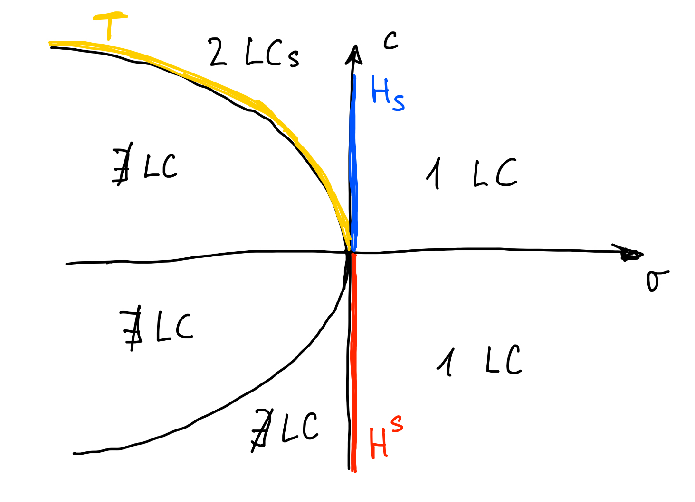
where:
- \(H^S\): supercritical Hopf bifurcation,
- \(H_S\): subcritical Hopf bifurcation,
- \(T\): tangent bifurcation between limit cycles.
In terms of stability we have:
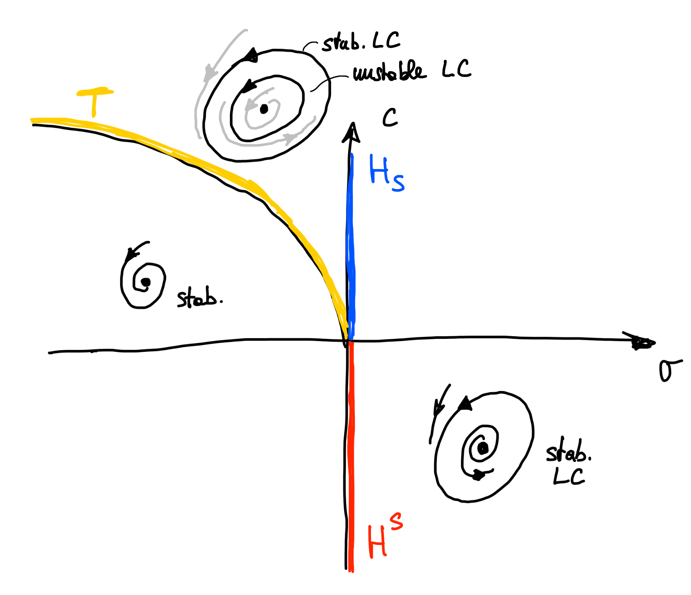
As we cross \(T\) we have 2 limit cycles colliding and disappearing, exactly like the tangent bifurcation between equilibria. (In fact, this is what happens in polar coordinates.)
The tangent bifurcation can be visualized as follows:
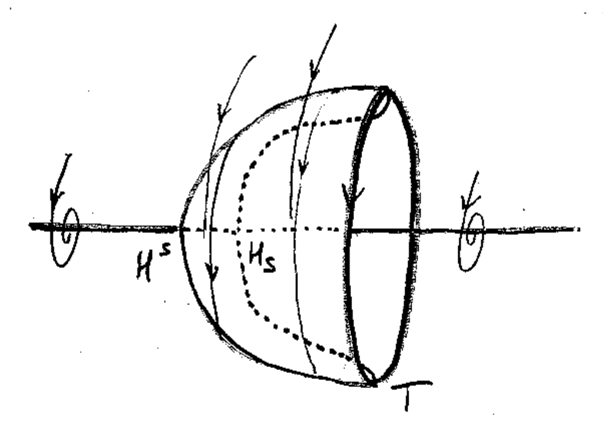
We have seen this type of bifurcation in a negative feedback loop. It is catastrophic.